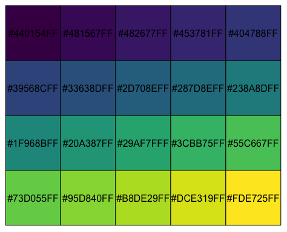

| viridis_pal {viridis} | R Documentation |
Viridis palette (discrete)
viridis_pal(alpha = 1, begin = 0, end = 1, direction = 1, option = "D")
alpha |
pass through parameter to |
begin |
The (corrected) hue in [0,1] at which the viridis colormap begins. |
end |
The (corrected) hue in [0,1] at which the viridis colormap ends. |
direction |
Sets the order of colors in the scale. If 1, the default, colors are ordered from darkest to lightest. If -1, the order of colors is reversed. |
option |
A character string indicating the colormap option to use. Four options are available: "magma" (or "A"), "inferno" (or "B"), "plasma" (or "C"), "viridis" (or "D", the default option) and "cividis" (or "E"). |
Here is an example of a 20-element palette:

See viridis for more information on the color scale.
Bob Rudis bob@rud.is
library(scales) show_col(viridis_pal()(10))